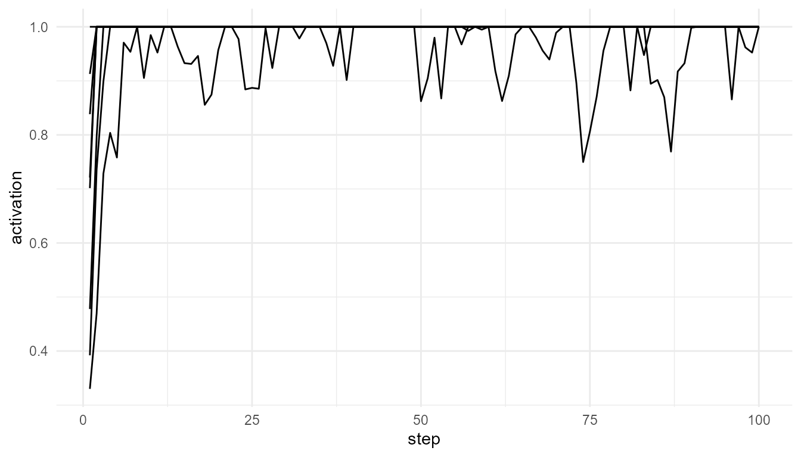

Overview
consciousnessModelR provides simplified simulations for
teaching major ideas in consciousness studies.
The package focuses on educational clarity. It does not attempt to measure or produce consciousness.
The central learning question is:
How can different theories of consciousness be represented as simple computational models?
Main ideas
The package includes models inspired by:
- Global Workspace Theory
- Attention competition
- Broadcast dynamics
- Information integration
- Threshold models of awareness-like processing
A first simulation
sim <- simulate_global_workspace(n_processes = 8, steps = 100, seed = 123)
head(sim)
#> step process activation winner is_winner broadcast ignited
#> 1 1 P1 0.3920908 P8 FALSE 0 TRUE
#> 2 1 P2 0.7014752 P8 FALSE 0 TRUE
#> 3 1 P3 0.7208877 P8 FALSE 0 TRUE
#> 4 1 P4 0.8383253 P8 FALSE 0 TRUE
#> 5 1 P5 0.9127688 P8 FALSE 0 TRUE
#> 6 1 P6 0.3300235 P8 FALSE 0 TRUEPlot activation through time
plot_consciousness_sim(sim, x = "step", y = "activation", group = "process")
Apply a threshold
thresholded <- consciousness_threshold(sim, activation_col = "activation", threshold = 0.7)
head(thresholded)
#> step process activation winner is_winner broadcast ignited threshold
#> 1 1 P1 0.3920908 P8 FALSE 0 TRUE 0.7
#> 2 1 P2 0.7014752 P8 FALSE 0 TRUE 0.7
#> 3 1 P3 0.7208877 P8 FALSE 0 TRUE 0.7
#> 4 1 P4 0.8383253 P8 FALSE 0 TRUE 0.7
#> 5 1 P5 0.9127688 P8 FALSE 0 TRUE 0.7
#> 6 1 P6 0.3300235 P8 FALSE 0 TRUE 0.7
#> above_threshold threshold_distance
#> 1 FALSE -0.307909171
#> 2 TRUE 0.001475242
#> 3 TRUE 0.020887668
#> 4 TRUE 0.138325290
#> 5 TRUE 0.212768817
#> 6 FALSE -0.369976484Interpretation
In this toy model, several processes compete for access. A process with sufficiently high activation may cross a threshold and become globally broadcast.
This is an educational representation of one idea from Global Workspace Theory, not a model of real subjective experience.
Suggested reading
Global Workspace Theory was developed by Baars and later expanded in cognitive neuroscience by Dehaene and colleagues (Baars 1988; Dehaene and Changeux 2011; Dehaene 2014).